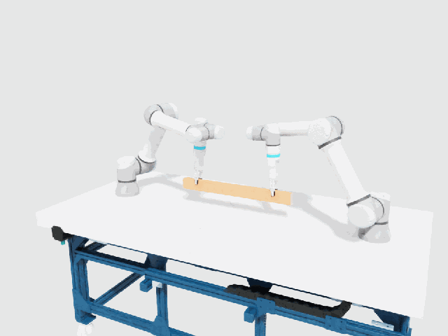
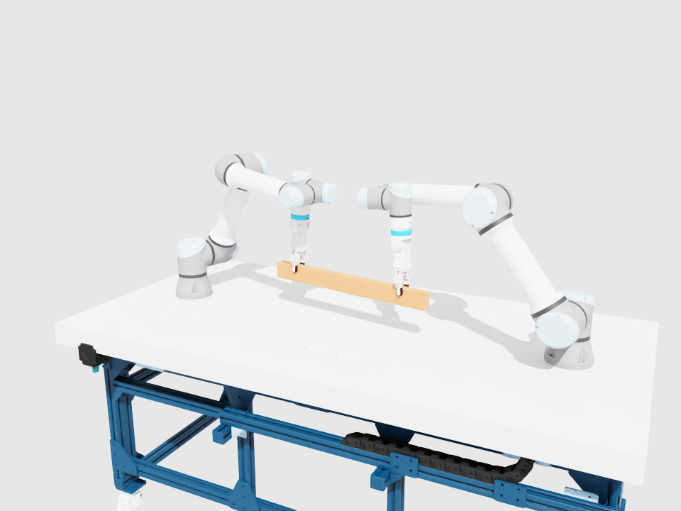
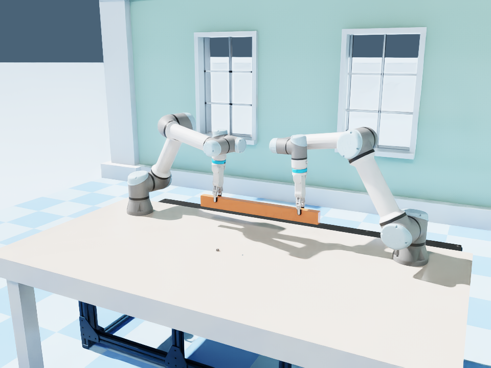
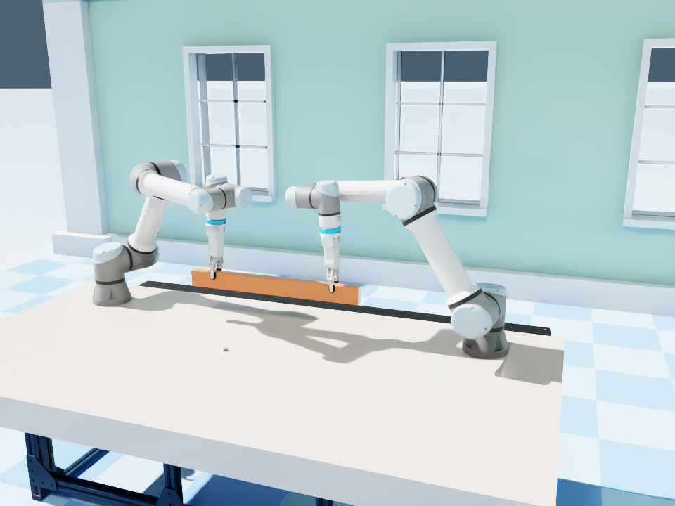
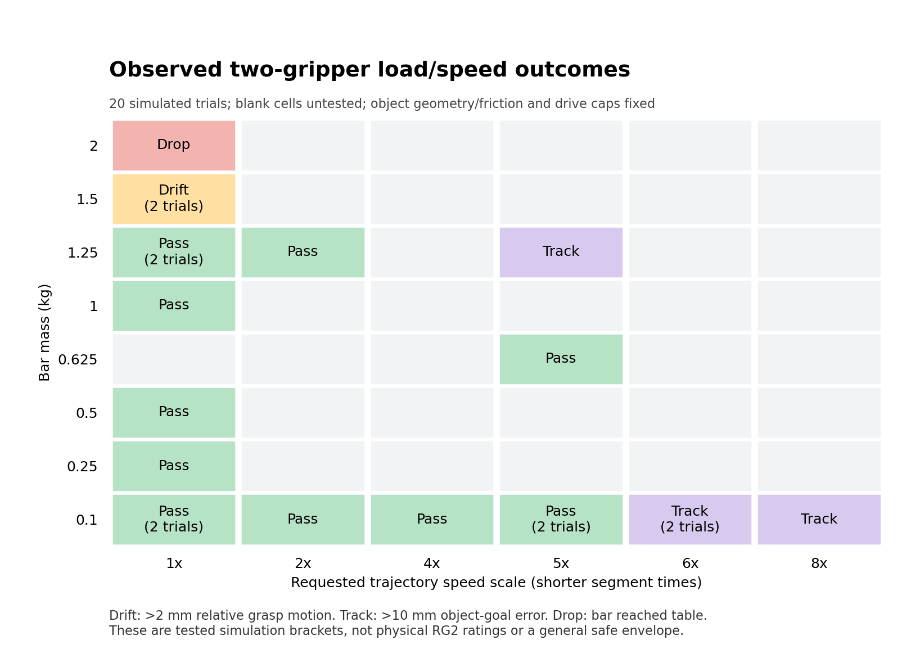

Two arms, one bar, measured in simulation
Two opposing UR5e arms with RG2 grippers hold and move a shared bar. This page is a hands-on record: how to run it, what was measured, where the limits are, and what a digital twin of this bench would still need.
The motion
The arms begin already grasping a 0.1 kg bar, then translate, yaw, pitch, return and settle into a final pose. The bar is a dynamic rigid body: nothing teleports or welds it. Each frame below is from the recorded, measured run.


Run it yourself
You need Isaac Sim 5.1.0, a working NVIDIA GPU and nvidia-smi. Then:
git clone https://github.com/kalebcoleman/rise-two-arm-research.git
cd rise-two-arm-research
RISE_PYTHON=/path/to/isaac-sim/python.sh ./isaac-sim-mcp/scripts/run_showcase.sh- Press Play. The launcher runs fresh physics with the same controller and checks.It passes only if slip, clearance, contact and tracking bounds all hold.
- Open the recording.
isaac-sim-mcp/showcase/recordings/WATCH - Two Arm Motion.usdareplays the measured transforms on a timeline.Keep itsRecorded Motion.usdcandmaterialsfolder beside it. - Just watch, no install. Open
checkpoints/Approved/00 WATCH MOTION.usdaand press Play.
Opening any other saved checkpoint restores a held pose, not a trajectory. The motion history is only in the recording.
What was built
1. Two arms, collision checks
Link frames, joint targets and collision setup for two UR5e rigs, including a corrected shoulder tracking and second-rig joint frames.
2. Shared-object grasp
Both grippers hold one bar. Pad frames, finger contacts, gravity release and a slip metric were checked. Checkpoint 06 is the accepted grasp.

3. Coordinated motion
Object-space goals, per-arm inverse kinematics and position control. The path is set by the goal, not by commanding the bar.

4. Load and speed limits
Twenty trials sweeping bar mass and movement speed, with each failure classified as grip drift, drop or arm tracking.
The lab repositories supplied the UR5e, RG2, quick changer and bench geometry. POST_CLONE_CHANGES.md separates supplied assets from the additions made here.
Results
Verified demo, measured in the recording
| Check | Result |
|---|---|
| Fresh physics, presentation scene | Passed |
| Four-finger contact | 100% of samples |
| Unexpected collisions | 0 |
| Max translation / rotational slip | 0.135 mm / 0.036° |
| Minimum clearance | 99.5 mm |
| Max position / rotation tracking error | 2.02 mm / 0.354° |
| Independent USDA Play | Passed (bar moved 16.93 mm in first 2 s) |
How far can the bar go?
Held at the accepted grasp, mass and speed were varied one at a time. Across 20 trials, 13 passed and 7 failed. The limits are brackets between tested endpoints, and the combined cases show they cannot simply be multiplied.
| Experiment | Repeated pass | Repeated failure | What failed |
|---|---|---|---|
| Mass at 1x speed | 1.25 kg | 1.5 kg | 4.9 mm relative grasp drift during load settling |
| Speed with 0.1 kg | 5x | 6x | 10.05 mm object-goal tracking error; grip drift only 0.25 mm |
| Combined 1.25 kg / 5x | Failed | 10.08 mm tracking error (a 0.625 kg / 5x run passed) | |

These are simulated, criterion-dependent results with fixed contact and drive settings. They are not RG2 ratings, payload specifications or a general safe envelope.
How to read the failures
| Label | Meaning |
|---|---|
| Pass | Relative grasp drift ≤ 2 mm and rotation ≤ 1°, object tracking within 10 mm / 5°, clearance ≥ 50 mm, four-finger contact ≥ 95%, no unexpected collisions, saved stage replays. |
| Drift | The grip shifted relative to the arms during load settling, before any path motion. |
| Track | The arms or object lagged the moving goal. This is a controller tracking limit, not proven gripper slip. |
| Drop | The bar reached the table collider during initialization. Motion never began. |
Learning path
The project is organized as a sequence of short experiments. Each one introduces one idea.
- Two arms and collisions.Link frames, joint targets and why saved joint frames matter. Read the notes.
- Shared-object grasp.Pad frames, finger contacts, gravity release and slip. Read the notes.
- Coordinated motion.Object-space goals and per-arm inverse kinematics. Read the notes.
- Load and speed limits.Separate grip drift from arm tracking failure. Read the notes.
Toward a digital twin
Right now this is a simulation of the bench, not a calibrated twin. The model has uncalibrated contacts, position drives and suppressed robot gravity. The next stages are about closing the gap to a real workstation:
Measure the bench
Base, tool and camera transforms; joint offsets; object mass and inertia; actuator and gripper response; latency.
Build a repeatable baseline
One variable at a time, repeated trials around the observed failure boundaries, logged joint targets, object pose, contacts and saturation.
Pair sim with real data
Collect matched simulated and real observations, calibrate on one dataset and test on held-out conditions.
Sim-to-real questions
Does contact or actuation uncertainty predict slip? Do controller gains transfer across masses and speeds?
Real-hardware commissioning is a separate future phase. No robot driver is started by this showcase.
Reproduce the evidence
isaac-sim-mcp/showcase/recordings/report.json,replay-manifest.json,playback-verification.json: pass result, hashes and playback checks.isaac-sim-mcp/resources/bar-load-speed-limits/run-001/summary.json: all 20 trials.- docs/VALIDATION.md: the verified baseline record.
- START_HERE.md: reading order and roadmap.